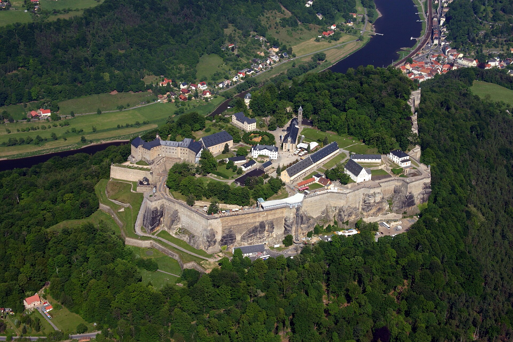
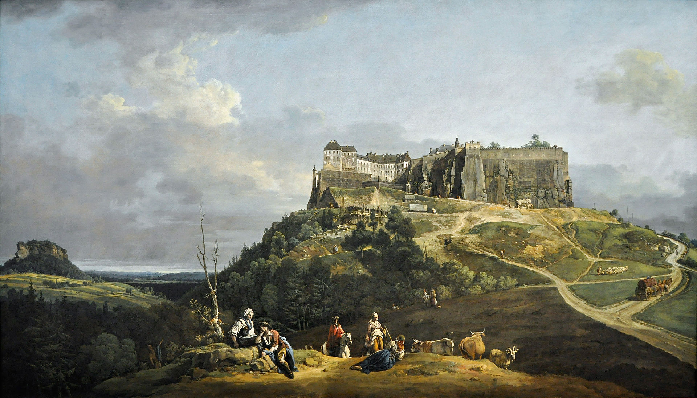
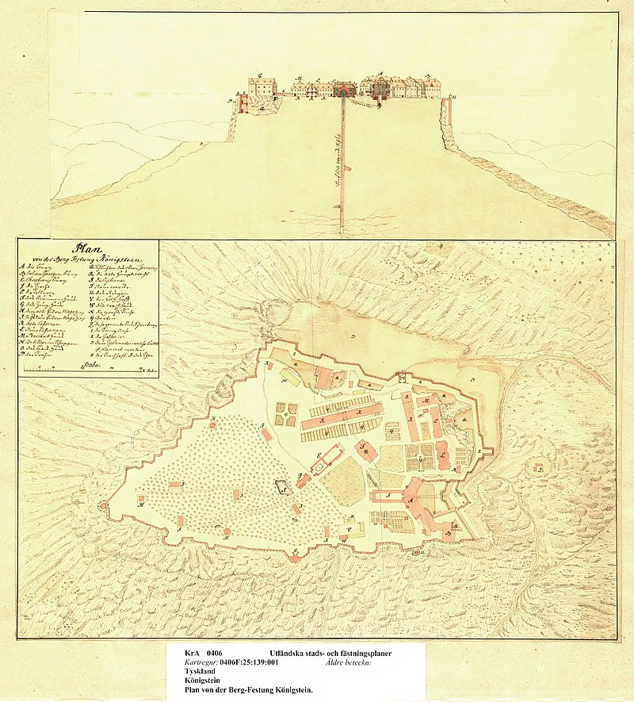
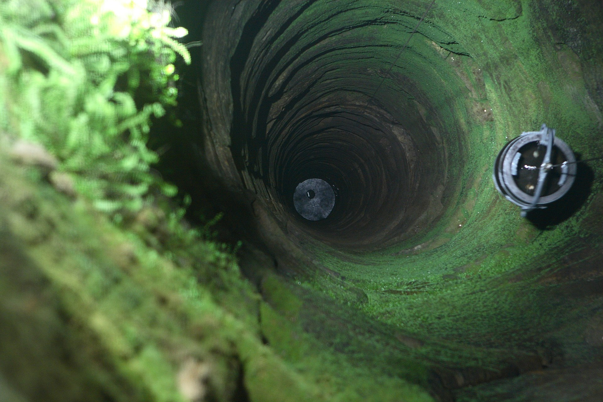
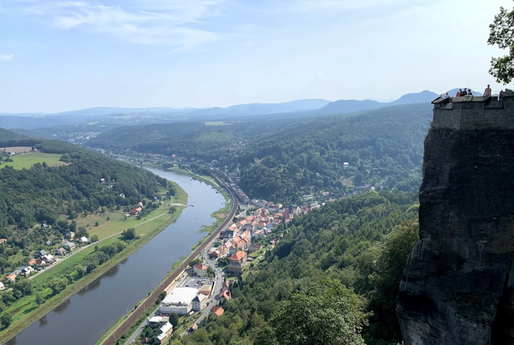
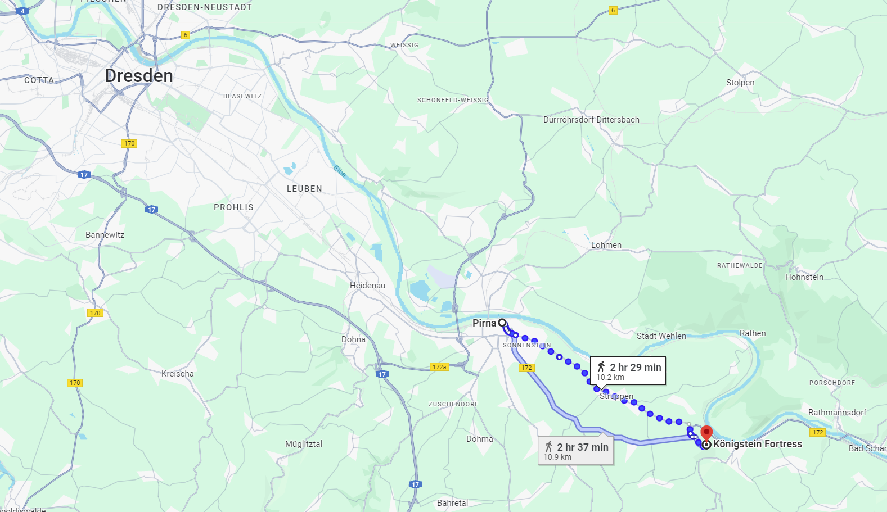
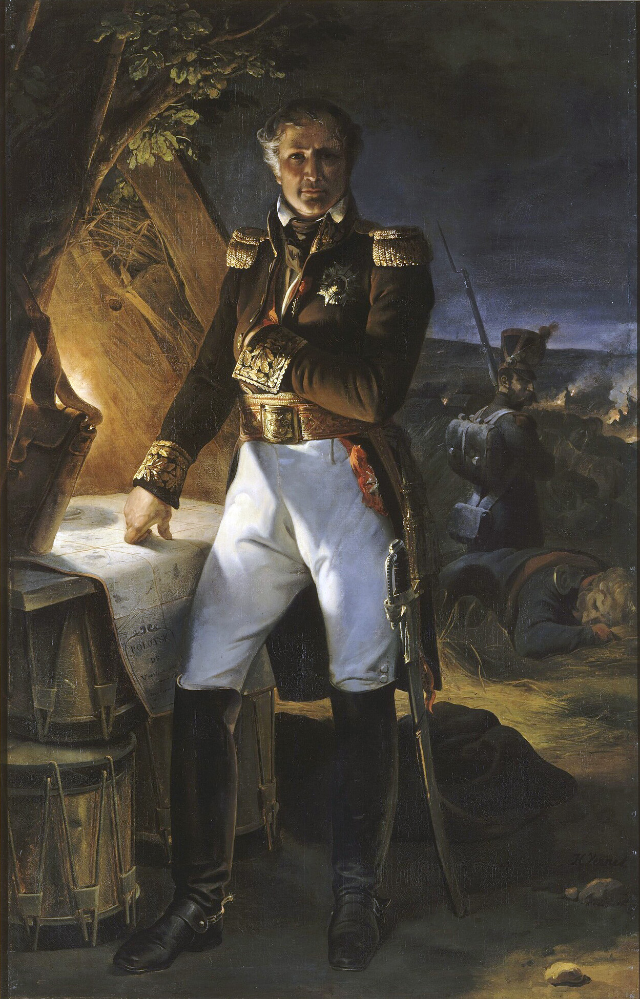
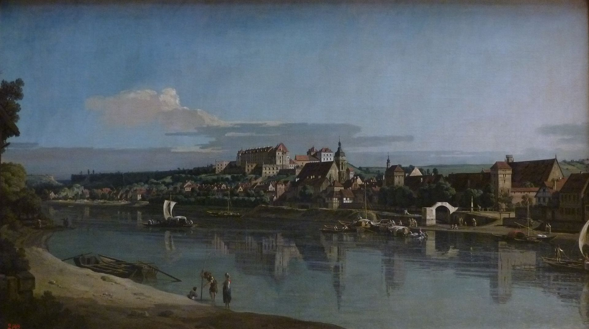
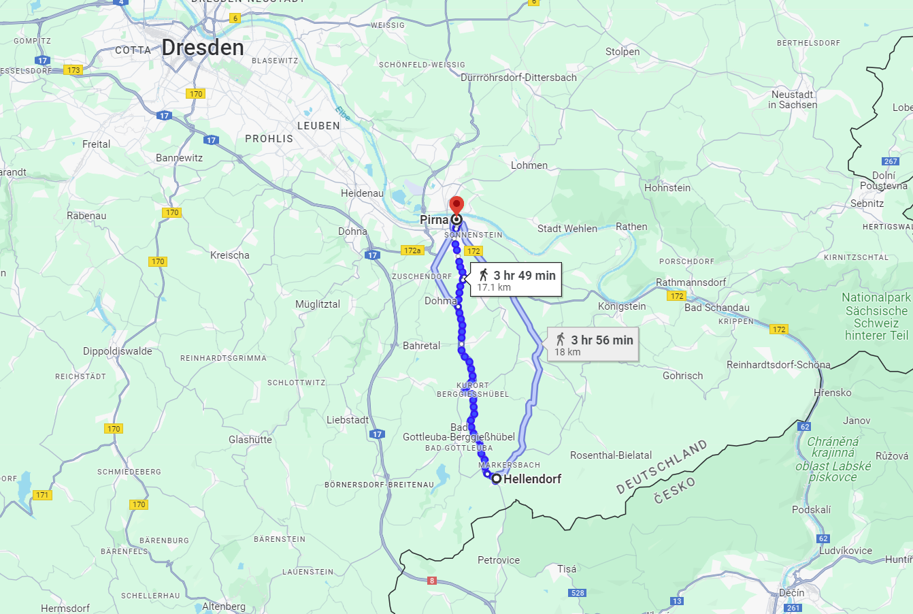
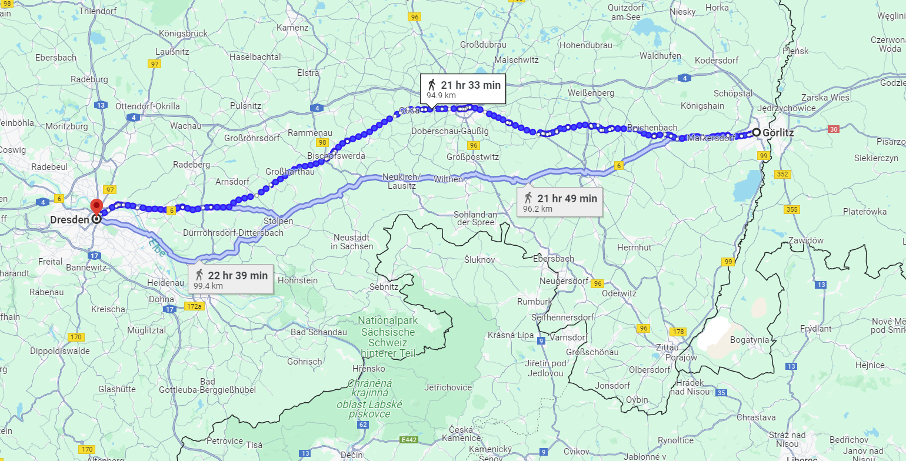

드레스덴 전투 (1) - 하늘과 땅과 사람
게시: 2024-02-19T06:30:39+09:00
슈바르첸베르크가 페터스발트 고갯길을 거쳐 드레스덴을 들이친 것은 분명히 나폴레옹의 의표를 찌른 멋진 작전이었습니다. 아무리 나폴레옹이 다 계산 안에 있던 움직임일 뿐이라며 침착한 척 했지만, 상황은 매우 위태로웠습니다. 당시 전황은 마치 새끼곰을 지키는 어미곰 한 마리를 사냥개 세 마리가 둘러싸고 위협하는 것 같은 상황이었는데, 그 새끼곰이 바로 드레스덴이었습니다. 드레스덴은 작센 왕국의 수도라는 상징성과 교통의 요지라는 점 외에도 그랑다르메의 온갖 군수품이 쌓인 보급 중심지였기 때문이었습니다. 어미곰이 동쪽 사냥개인 블뤼허를 거세게 쫓아내느라 잠깐 자리를 비운 사이에 남쪽 사냥개가 새끼곰의 뒷다리를 덥썩 물고 끌고가려는 상황이 8월 22일의 상황이었습니다. 페터스발트 고갯길을 넘은 보헤미아 방면군은 거칠 것 없이 전진했습니다. 페터스발트로부터 드레스덴까지는 고작 40km였는데, 그나마 도로 사정까지 좋았습니다. 고갯길을 내려온 이들은 곧 엘베강과 나란히 북쪽을 향해 뻗은 대로를 타고 순조롭게 북진했습니다. 다만 이렇게 북진하다 보면 피르나를 거칠 수 밖에 없었고, 거기에는 나폴레옹이 배치해놓은 생시르의 제14군단이 참호를 파고 주둔해 있었습니다. 또한 피르나에서 남서쪽으로 약 10km 정도 떨어진 엘베강 상류에는 유명한 쾨니히슈타인(Königstein) 요새가 있었습니다.

(별명이 '작센의 바스티유'인 쾨니히슈타인 요새는 꽤 높은 바위 언덕에서 엘베강을 내려다보는 위치에 있는 튼튼한 요새로서, 1233년 보헤미아의 윈체슬라스 1세(Wenceslas I)가 처음 요새를 지었다고 전해집니다. 윈체슬라스 1세라고 하니까 영화 'Love Actually'에서 짝사랑하는 주방직원 나탈리를 찾아 가가호호 노크를 하던 휴 그랜트가 아이들의 요청으로 부른 캐롤송 'Good King Wenceslas'가 떠오릅니다만, 그 윈체슬라스는 10세기 경의 보헤미아 왕이라서, 이 요새와는 별 상관이 없습니다.)

(1750년대의 쾨니히슈타인 요새를 묘사한 그림입니다. 이탈리아 화가인 Bernardo Bellotto의 작품입니다. 현재 남아있는 건물들도 어떤 것은 400년 넘은 것이라고 하며, 지금도 연간 70만 명의 관광객이 찾아오는 관광명소입니다.)

(1690년 경에 그려진 쾨니히슈타인 요새의 청사진입니다. 바위 언덕에 위치한 요새는 식수를 구하는 것이 큰 문제인데, 쾨니히슈타인 요새는 요새 가운데에 그 두꺼운 바위를 뚫고 우물을 파서 그 문제를 해결했습니다.)

(쾨니히슈타인 요새의 152m 깊이의 우물 모습입니다. 이 우물은 작센에서 가장 깊은 우물이자 유럽 전체에서도 2번째로 깊은 우물입니다.)

(쾨니히슈타인 요새에서 내려다 본 엘베강입니다. 장거리포가 있다면 충분히 그 일대를 제압할 수 있는 위치입니다.)

(쾨니히슈타인 요새와 피르나, 그리고 드레스덴의 상대적인 위치와 거리를 보여주는 지도입니다.) 피르나 및 쾨니히슈타인 요새 문제는 8월 22일 당일로 별로 어렵지 않게 해결되었습니다. 보헤미아 방면군의 선봉대는 비트겐슈타인이 이끄는 러시아군이었는데, 비트겐슈타인은 먼저 쾨니히슈타인 요새 아래에 병력을 배치하여 이 요새를 봉쇄했습니다. 이어서 그는 참호 외에는 별다른 방어물이 준비되어 있지 않던 피르나를 정면에서 착검한 보병들의 돌격으로 간단히 점령했습니다. 실은 이곳을 지키고 있던 생시르가 여기서 격전을 치르는 것은 무의미하다고 판단하고 재빨리 드레스덴으로 철수한 것이 피르나에서의 전투가 쉽게 종료된 이유였습니다. 생시르는 여기서 왜 이렇게 맥없이 후퇴했을까요? 애초에 드레스덴에서 농성하는 것이 유리했다면 나폴레옹도 피르나가 아니라 드레스덴에 제14군단을 배치했을 것입니다. 생시르는 그저 당장의 전투가 무서워서 후퇴한 것일까요? 생시르는 이 드레스덴 전투 이후 나폴레옹으로부터 '방어전에서는 나보다 더 낫다'라는 평을 들을 정도의 인물이었으니 결코 그건 아니었습니다. 애초에 나폴레옹이 피르나에 제14군단을 주둔시킨 것도 여기가 드레스덴으로 가는 길목이자 유사시 엘베강 양안 어디로든 재빠른 이동을 할 수 있는 위치였기 때문일뿐, 피르나는 강가에 위치한 소도시로서 주변은 평평함 그 자체이고 방어선으로 삼을 별다른 지형지물이 없어서 방어에는 좋지 않았습니다. 그를 입증하듯, 바로 며칠 뒤 여기서 방담의 제1군단을 상대해야 했던 연합군의 오이겐 대공도 피르나를 쉽게 포기하고 물러났습니다.

(생시르는 1764년 생으로, 나폴레옹보다 5살 연상이었습니다. 그는 어린 시절 자신을 버리고 떠난 어머니의 처녀적 성씨를 따서 성씨를 고친 것으로 유명한데, 그의 원래 이름은 로랑 드 구비옹(Laurent de Gouvion)이었습니다. 귀족은 아니지만 넉넉한 부르조아 집안에서 태어난 그는 원래 미술쪽에 소질이 있어 10대 시절 화가 수업을 위해 로마로 유학을 갔으나, 결국 시절이 시절인지라 결국 그는 화가가 되지 못하고 군인이 되었습니다. 그가 이름을 바꾼 것은 자신을 버린 어머니에 대한 정이 사무쳤기 때문은 아니었고, 맨 처음 군에 입문할 때 이미 군 장교로 있던 먼 친척 구뱅(Gouvain) 대위의 도움을 받은 것과 관련이 있습니다. 이 구뱅 대위라는 사람은 여러가지 부정부패로 악명이 높았기 때문에, 자신이 구뱅 대위의 친척이라는 것에서 사람들의 이목을 돌리기 위해 생시르(Saint Cyr)로 이름을 바꾼 것입니다. 그는 상당히 유능한 군인었지만 자존심이 강하고 원리원칙을 매우 강조하는 인물이었기 때문에 일부 부하 장교들로부터는 꽤나 미움을 받았다고 합니다.)

(18세기 중반의 피르나의 평화로운 모습입니다. 그림에서 보시다시피 강변 평야에 위치한 피르나는 방어에는 좋지 않은 곳이었습니다.) 나폴레옹이 드레스덴을 생시르에게 맡긴 것은 매우 탁월한 선택이었습니다. 생시르는 나폴레옹이 이집트 원정을 떠난 공백기간 동안 마세나와 동급으로 취급되던 지휘관으로서 독립적인 군(armee) 지휘를 해본 몇 안 되는 인물이었지만, 나폴레옹이 황위에 오를 때 그의 정치적 성향 때문에 원수 지휘봉을 받지 못했었습니다. 그는 결코 저돌적이고 공격적인 지휘관이 아니어서 쓸데없는 피를 흘리는 것을 싫어했지만 방어전에 있어서는 매우 효율적인 작전을 펼치는 사람이었습니다. 8월 22일 보헤미아 방면군이 페터스발트를 넘자마자 생시르는 그 사실을 파악하고 즉각 나폴레옹에게 '러시아군을 선두에 세운 오스트리아군 전체가 쳐들어오고 있다'라는 급보를 띄웠는데, 그 사실도 그의 뛰어난 행정 능력을 보여주는 것입니다. 생시르는 나폴레옹이 예상한 보헤미아 방면군의 침투 경로와는 무관하게 여기저기에 감시 초소를 설치해두었고, 덕분에 헬렌도르프(Hellendoft)의 초소에서 페터스발트 고갯길을 넘어오는 적군을 매우 빨리 발견하고 나폴레옹에게 구원 요청을 보낸 것이었습니다. 이건 매우 기본적인 것처럼 보이지만 그렇게 기본에 충실하기가 어려운 법입니다.

(저렇게 멀리 떨어진 헬렌도르프에 경계 초소를 배치한 것 자체가 대단한 일입니다. 나폴레옹은 페터스발트 경로를 예상하지 않았지만 생시르는 혹시나 하는 마음에 배치했던 것입니다. 아마 실제로는 저 헬렌도르프 뿐만 아니라 여기저기 훨씬 더 많은 곳에 경계 초소를 배치했었을 것입니다.)
생시르가 이끄는 제14군단은 약 2만이 안 되는 규모로 병력이 형편없이 작은 정도는 아니었지만, 그랑다르메의 모든 군단들 중에서 가장 늦게 편성된 군단이었고 거의 전원이 그 해에 징집된 10대 소년들로 이루어진 부대였습니다. 그랬기에 나폴레옹이 가장 후방이라고 할 수 있는 드레스덴에 남겨둔 것이었습니다. 생시르는 이들을 이끌고 제14군단의 몇 배가 될지 아직 가늠도 되지 않는 대규모 적군을 맞아 야전을 벌이는 것은 자살 행위라고 본 것이었습니다. 문제는 그렇게 후퇴해간 드레스덴의 방어시설이었습니다. 드레스덴은 그 해 들어 이미 2차례 주인이 바뀐 도시였습니다. 처음 프랑스군이 후퇴할 때 연합군에게 싸우지도 않고 드레스덴을 내주었고, 뤼첸 전투에서 패배한 연합군도 드레스덴에서 농성할 생각을 전혀 하지 않고 후퇴하여 바우첸에서 참호를 팠습니다. 그만큼 드레스덴이 공성전에 적합한 시설을 갖추지 못했다는 뜻이었습니다. 나폴레옹은 휴전 기간 중에도 드레스덴의 방어시설 확충을 지시해두었지만, 당시만 해도 드레스덴에서 대규모 전투가 벌어질 것이라고는 심각하게 생각하지 않았습니다. 드레스덴은 당시 인구 3만 정도의 도시로서, 엘베강의 피렌체라고 불릴 정도로 아름다운 도시였지만 이제 점점 확장되는 교외로 인해 중세 시절의 성벽은 군데군데 상당부분 철거된 상태였습니다. 생시르는 긴급히 시내 주요 도로에 바리케이드를 치고 외곽 주택의 벽에는 총안을 뚫고 포대를 쌓는 등의 긴급 방어전을 준비했습니다. 하지만 생시르가 가장 믿는 것은 이전부터 준비해둔, 시 주변을 목걸이처럼 둘러싸고 있는 13개의 보루(redoubt)였습니다. 이 보루들에는 대포들이 설치되어 드레스덴으로 밀려올 적군에게 먼 거리에서는 구형탄(roundshot)을, 가까운 거리에서는 산탄(canister shot)을 쏘아댈 수 있었습니다. 하지만 주변이 역시 탁 트인 평원인 드레스덴을 둘러싼 적군은 무려 20만 정도였습니다. 고작 2만도 안 되는 제14군단이 10배가 넘는 적군을 상대로 오래 버티기는 어려웠습니다. 8월 22일 페터스발트를 넘자마자 거기에서 20km 떨어진 피르나를 당일로 점령한 보헤미아 방면군은 고작 20km만 더 가면 드레스덴에 당도할 판국이었습니다. 그러나 바로 그 순간, 드레스덴을 구원할 나폴레옹과 그의 근위대는 무려 95km 떨어진 괴를리츠에도 채 도착하지 못한 상태였습니다.
드레스덴에 문제가 생기면 순식간에 20만 대군을 몰고 나타나겠다는 나폴레옹의 약속은 그저 허언에 불과했던 것일까요? 전투에서 천지인(天: 시간 地: 공간 人: 병력과 사기)은 승패에 있어 결정적인 요소들인데, 나폴레옹은 드레스덴 전투에 있어 이 3가지 요소 모두에 있어 절대적인 열세에 놓여 있였습니다.
하지만 상대는 역시 나폴레옹이었습니다. 그는 오히려 이 위기에서 엉뚱한 생각을 하고 있었습니다.

(나폴레옹이 8월 23일 생시르의 급보를 받아들었을 때, 그는 뢰벤베르크에서 괴를리츠로 향하고 있었습니다.)
Source : The Life of Napoleon Bonaparte, by William Milligan Sloane Napoleon and the Struggle for Germany, by Leggiere, Michael V https://warfarehistorynetwork.com/article/napoleons-last-great-victory-the-battle-of-dresden/ https://en.wikipedia.org/wiki/Laurent_de_Gouvion_Saint-Cyr https://en.wikipedia.org/wiki/K%C3%B6nigstein_Fortress https://en.wikipedia.org/wiki/Pirna